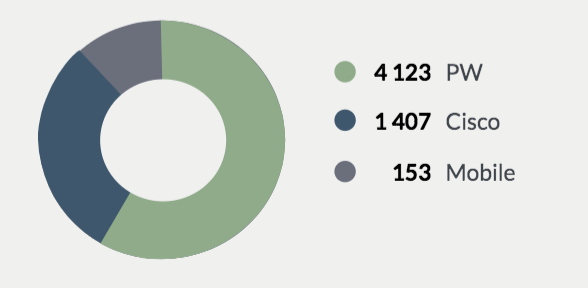

<div class="lines-per-system">
    <ccd-card>
        <ng-container class="mat-card-avatar">
            <i class="pi pi-circle-off cal"></i>
        </ng-container>
        <ng-container class="mat-card-title">
            Lines per system
        </ng-container>
        <ng-container class="mat-card-content">
            <mat-tab-group>
                <mat-tab label="All">
                    <div class="figure">
                        <p>6 680 <span class="total">In Total</span></p>
                    </div>
                    <div class="data">
                        
                    </div>

                    <div class="bottom-btn">
                        <ccd-lime-button>View Line Inventory</ccd-lime-button>
                    </div>

                </mat-tab>
                <mat-tab label="ITS">Race</mat-tab>
                <mat-tab label="Cisco">Core</mat-tab>
                <mat-tab label="IPC-Unigy">Core</mat-tab>
            </mat-tab-group>
        </ng-container>
    </ccd-card>
</div>